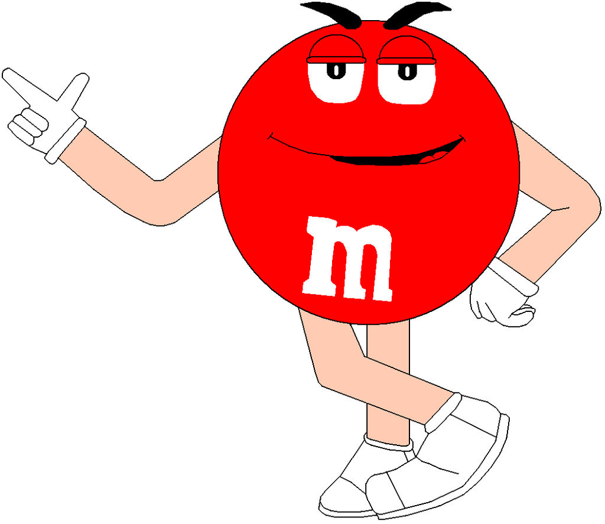
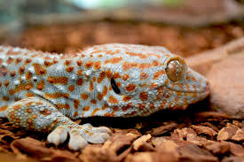
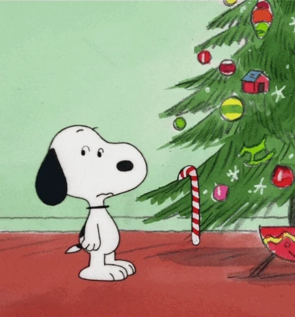

Czekolada pitna – ziarna kakaowca są poddawane fermentacji, suszone, a następnie oczyszczane i prażone.

Następnie miażdży się ich skorupki i odsiewa je oraz usuwa zarodki. Z pokruszonych ziaren wydobywa się tłuszcz za pomocą wyciskania, wyżymania lub rozpuszczalnika.

Pozostaje sucha substancja, tzw. makuchy. Zostają one rozdrobnione i wysuszone w temperaturze 20 stopni Celsjusza. Następnie przerabia się je na proszek i przesiewa. Otrzymany ciemny, aromatyczny proszek mieszany jest z cukrem i otrzymuje się czekoladę w proszku.Czekolada twarda – pokruszoną śrutę kakaową mieli się w wysokiej temperaturze. Powstaje masa zwana likierem czekoladowym.
Miesza się ją i rozgniata, aż powstanie miałka i tłusta substancja, puszysta, o aksamitnej gładkości. Poddawana jest ona konszowaniu – mieszaniu i rozcieraniu na sucho.
Dzięki temu staje się bardziej plastyczna, zmniejsza się jej wilgotność i znikają resztki kwasowości. Pod koniec procesu konszowania dodaje się masło kakaowe i ewentualnie lecytynę. Cały czas masa jest łagodnie podgrzewana do odpowiedniej temperatury (80-85 stopni dla czekolady gorzkiej, 55-60 stopni dla czekolady mlecznej). Następnie czekoladę się powoli schładza, aby tłuszcz kakaowy jednolicie się skrystalizował.
